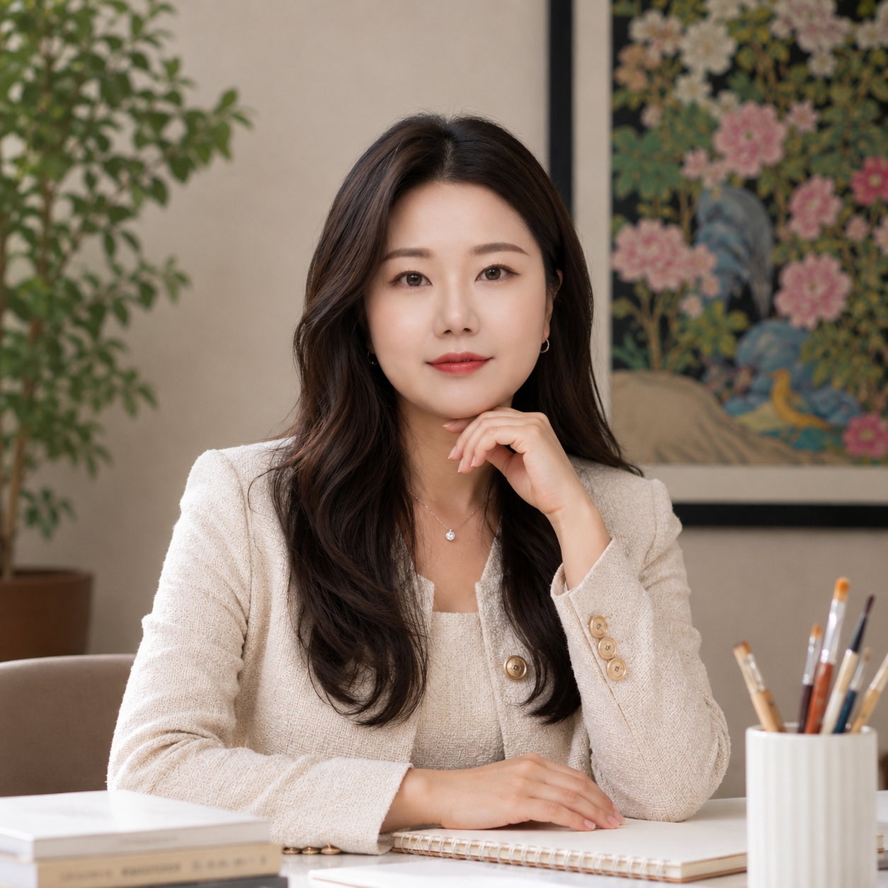

Contemporary Painting Rooted in Minhwa
Park Kiryang
말이 되기 전의 감정을
장면으로 옮깁니다.
민화에서 익힌 채색의 방법을 바탕으로
감정과 자아의 움직임을
동시대의 회화로 그립니다.

나는 아직 명확한 이름을 갖지 못한 감정이
어떤 형태로 남는지 그린다.
불안하고, 애가 타고, 버티고, 놓아주고, 다시 움직이는 순간들.
감정은 언제나 하나의 단어로 정리되기보다 몸과 기억, 사물과 풍경 속에 여러 겹으로 남는다.
나는 그 모호한 상태를 화면 위의 장면과 형상으로 옮긴다.
작품에 반복해서 등장하는 '올랑이'는 이러한 감정을 통과하는 회화적 주체다.
아기 호랑이의 모습을 한 올랑이는 때로 나를 대신해 웅크리고, 바라보고, 버티고, 떠난다.
하나의 고정된 성격이나 메시지를 가진 캐릭터라기보다,
매 작품에서 서로 다른 감정을 경험하며 변화하는 또 하나의 자아에 가깝다.
최근의 작업은 올랑이뿐 아니라 심장, 항아리, 식물, 물, 궤도와 같은 다양한 형상을 통해
감정의 상태를 확장해 나간다. 익숙한 대상은 화면 안에서 본래의 의미를 조금씩 벗어나고,
개인의 기억과 감정이 머무는 새로운 장면이 된다.
민화는 이러한 작업의 출발점이자 내가 회화를 다루는 하나의 방법이다.
전통의 상징을 반복하기보다 장지 위에 색을 겹쳐 올리고, 바림하고,
세밀한 붓질을 반복하며 밀도를 만들어가는 채색의 감각을 이어간다.
수간분채와 석채, 과슈 등 서로 다른 재료를 함께 사용하며 오래된 회화의 방법을 지금의 감각과 연결한다.
나는 작품을 통해 감정의 답을 제시하려 하지 않는다.
대신 아직 정리되지 않은 마음이 잠시 머물 수 있는 장면을 만들고자 한다.
관객이 그 안에서 자신의 기억과 감정을 발견하는 순간, 그림의 의미는 다시 시작된다.
Keywords 감정 / 자아 / 장면 / 층위 / 올랑이
Park Kiryang
감정의 상태와 자기인식의 순간을 회화로 다루는 작가이다.
'올랑이'라는 아기 호랑이 형상의 존재를 비롯해 심장, 항아리, 식물, 풍경과 사물 등을 통해
말로 명확히 설명하기 어려운 내면의 움직임을 시각적인 장면으로 전환한다.
2018년 전통 민화를 배우며 회화를 시작했다. 이후 민화의 상징 자체를 반복하기보다
장지, 수간분채와 석채, 바림과 반복적인 채색에서 익힌 회화적 방법을 동시대의 화면으로 확장해왔다.
현재는 회화를 중심으로 관객 참여형 프로젝트와 입체·디지털 매체까지 작업의 형식을 넓히며,
개인의 감정이 타인의 경험과 만나는 방식을 탐구하고 있다.
작가이자 문화예술기획자로 활동하며 작품과 전시, 프로젝트를 통해 감정에 관한 이야기를 지속하고 있다.
Practice
Painting · Participatory Projects
Object & Digital Experimentation